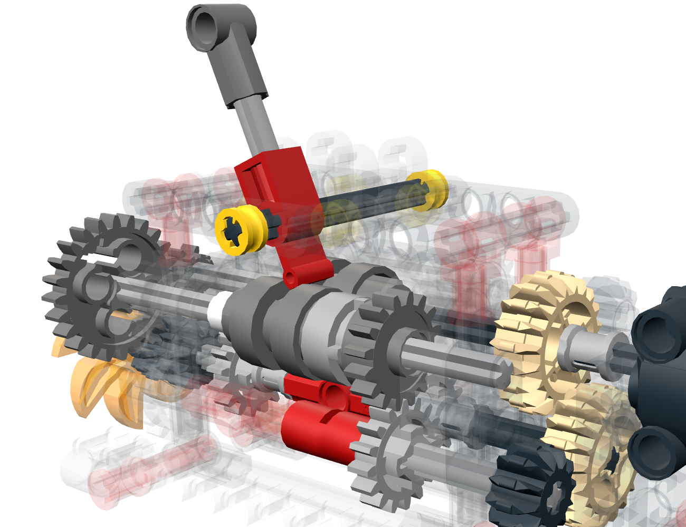
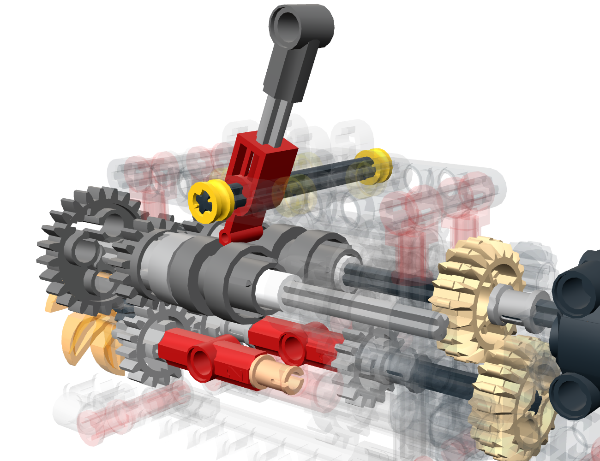
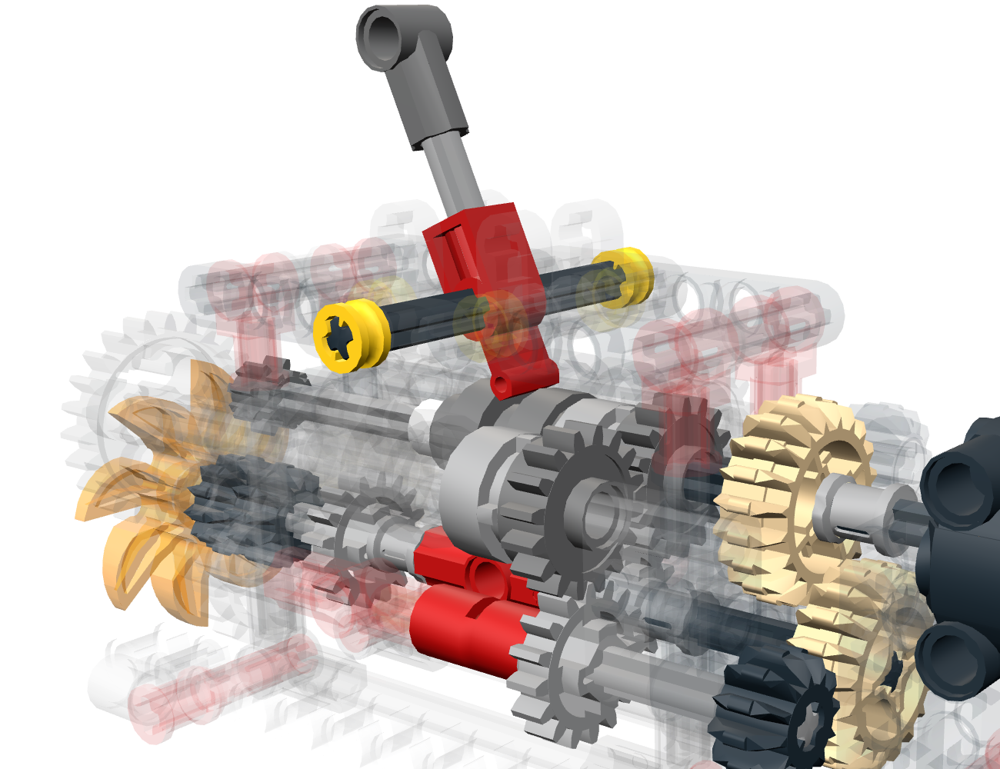
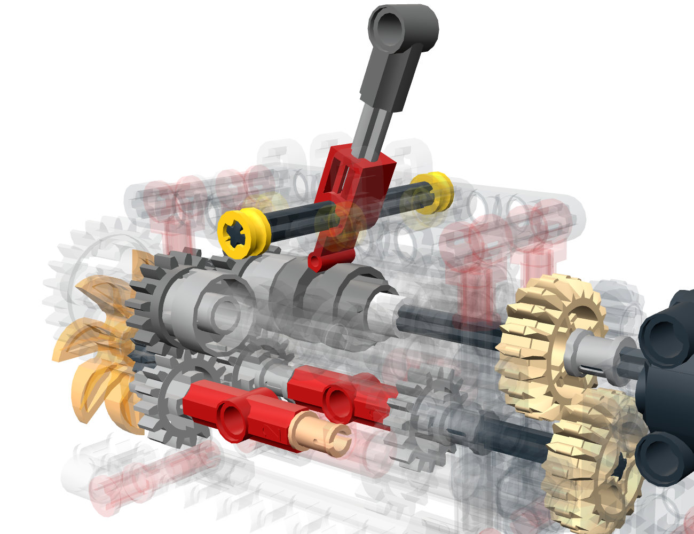
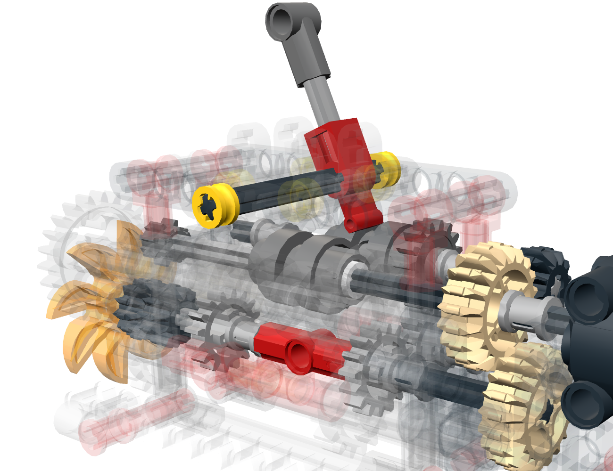
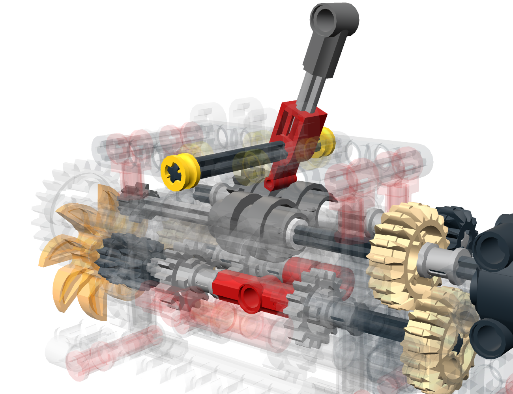

En cada par, las velocidades van en razón inversa al número de dientes, y la marcha es el producto de esas razones. Un engranaje intermedio solo invierte el sentido. motor : hélice = a : b significa a vueltas del motor por cada b de la hélice.
ωhélice/ωmotor = N1/N2 × N3/N4 × …
rpmhélice = rpmmotor × b / a

Anillo 1 · lado del motor
8:24 · 16:16 · 12:20
1/3 × 1 × 3/5 = 1/5
380 rpm → 76 rpm

Anillo 1 · lado de la hélice
8:24 · 16:16 · 16:16
1/3 × 1 × 1 = 1/3
380 rpm → 126.7 rpm

Anillo 2 · lado del motor
16:16 · 16:16 · 12:20
1 × 1 × 3/5 = 3/5
380 rpm → 228 rpm

Anillo 2 · lado de la hélice
16:16
1 = 1 (directa)
380 rpm → 380 rpm

Anillo 3 · lado del motor
20:12 · 16:16 · 16:16
5/3 × 1 × 1 = 5/3
380 rpm → 633.3 rpm

Anillo 3 · lado de la hélice
20:12 · 16:16 · 20:12
5/3 × 1 × 5/3 = 25/9
380 rpm → 1055.6 rpm
Las velocidades suponen el L-Motor a 380 rpm.
Proyectos de Divulgación Matemática
Comité de Enlace, Reclutamiento, Retención y Promoción (CERRP)
Departamento de Matemáticas, UPR-RP